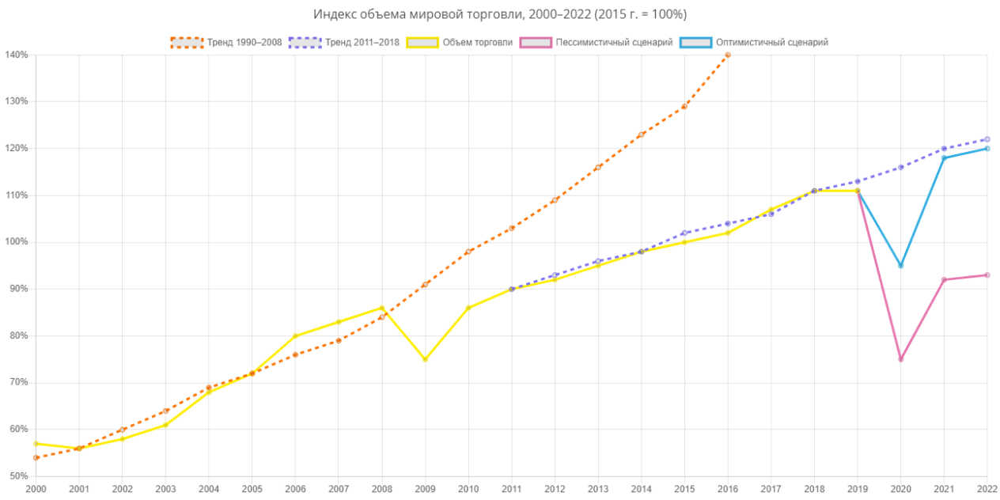

Пандемия Covid-19 привела к катастрофическому падению и неравномерному восстановлению торговой отрасли. Глубина кризиса и скорость выхода из него будут зависеть от продолжительности вспышки COVID-19, возникновения новых волн и эффективности ответных мер. По данным Всемирной торговой организации, восстановление отрасли в случае реализации оптимистичного сценария произойдет в 2021 году.
Текущий кризис способствовал формированию особого формата потребления с точки зрения расходов, категорий покупаемых товаров, каналов продаж и стратегии покупок. Произошло ускорение развития электронной торговли и сопутствующих сервисов.
АКТУАЛЬНЫЕ РЕШЕНИЯ
Агентство проанализировало российский рынок RetailTech и сформировало подборку технологических продуктов и сервисов.
E-commerce
Маркетплейсы
Платформы, онлайн-магазины
Платформы в области устойчивого потребления
Маркетплейсы, специализирующиеся на экопродуктах, аренде и обмене
SaaS-конструкторы онлайн-магазинов
Аналитика
Анализ потребительского поведения
Комплексная аналитика деятельности магазина
Наполненность полок, деятельность продавцов, состояние складов и т. д.
Анализ эффективности маркетинговой и рекламной активностей
Анализ ценообразования
Логистика и дистрибуция
Платформы для автоматизации взаимодействия с поставщиками
Платформы организации доставки
Формирование и планирование закупок и поставок
Вендинг
Платежные системы
Платежные платформы
Цифровые квитанции
Точки продаж (PoS) и Checkout-системы
Кешбэк-сервисы
Маркетинг
Новые каналы продаж
Например, интеграция продаж в новостную ленту, видеоигру или фильм
Производство виртуального интерактивного контента
Сервисы создания 3D-моделей товаров, AR-элементов на сайтах и в мобильных приложениях
Платформы Online-to-Offline (O2O)
Инструменты по цифровизации поведения офлайн-клиента и включению его в омниканальную систему магазина
Создание клиентского опыта
Платежные платформы
Цифровые квитанции
Производство продуктов по запросу
Сервис создания продуктов под точечный запрос пользователя
Роботизированный ритейл
Консультанты в зале, складские операции
У вас есть технологический продукт или сервис?
Анализ потребительского поведения
Формирование специфичного «кризисного» потребления, утилитарный онлайн, эмоциональный офлайн и потребительская осознанность – чего ожидать в ближайшие годы?
2020
2021-2022
2025+
- Кризисное потребление: закупки впрок, высокий спрос на товары длительного хранения ;
- Вынужденная авантюрность покупок: пользователю приходится пробовать новое из-за недоступности привычного ;
- Формирование привычки покупать онлайн, в том числе среди людей старших возрастов.
- Преобладание утилитарной модели потребления: внимание к удобству, скорости покупки, низкой стоимости
- Покупки на длительный срок и регулярные покупки переходят в онлайн
- Распространение «устойчивых» моделей потребления, например аренда одежды по подписке
- Рост готовности делиться персональными данными для получения кастомизированного предложения
- Рост спроса на эмоциональный опыт: новые впечатления, знания, возможность вырваться из рутины;
- Почти 70% потребителей готовы покупать свежие продукты питания онлайн;
- Ценности и этичность компании (например, отношение к сотрудникам, экологии) становится значимым фактором выбора.
Перспективные технологии
Пандемия дала серьезный толчок к развитию новых технологий. Наибольшими темпами роста в I квартале 2020 года отличается сегмент ментального здоровья, также растут инвестиции в регенеративную медицину, телемедицину и искусственный интеллект
Искусственный интеллект
Технологии ИИ позволяют решить две основные задачи, стоящие перед ритейлерами, – тотальная персонализация пользовательского предложения и повышение эффективности бизнес-процессов за счет построения качественных прогнозных моделей поведения потребителей и спроса. По данным Capgemini34, доля ритейлеров, внедряющих ИИ, увеличилась с 4% в 2016 году до 28% в 2018 году и продолжает расти. Наиболее частые направления использования ИИ – это машинное обучение, чат-боты / голосовые помощники и обработка естественного языка. Область применения технологий ИИ в сфере торговли очень широка, однако 74% компаний используют ИИ-решения при работе с пользователем и только 26% – в операционных процессах.
Технологии FinTech
Создание омниканальных магазинов потребует внедрения новых интегрированных финансовых инструментов, позволяющих оплачивать покупки в любом доступном канале продаж, в том числе осуществлять трансграничные платежи, и желательно бесконтактным способом.
Робототехника
Роботы могут использоваться в ритейле для:
- проверки выкладки наполненности полок в магазинах и складах;
- консультирования покупателей (комбинируются с голосовыми помощниками и технологиями компьютерного зрения)
- доставки онлайн-заказов на небольшие расстояния («последняя миля»).
Эксперты отмечают, что для эффективного внедрения роботизированных решений по доставке, необходима полная готовность всей инфраструктуры: размеченные карты районов, система навигации и т. д.
AR / VR / live streaming
Под технологиями постцифрового опыта понимают решения, позволяющие совместить и дополнить опыт потребителя. В первую очередь к ним относятся технологии виртуальной и дополненной реальности, которые в том числе дают возможность:
- максимально точно представить товар, который покупается онлайн;
- имитировать использование товара в различных условиях. Например, при покупке квартиры клиент получает возможность увидеть ее в разное время года или дня;
- создавать маршруты пользователя внутри магазина.
Эксперты также выделяют live streaming как один из форматов, стирающих границу между онлайн и офлайн потребительским опытом.
Маркетплейсы
По мнению экспертов, возросшие требования к скорости доставки товаров в долгосрочной перспективе превратят маркетплейсы в IT-логистические компании, которые станут драйвером экономического развития как отрасли, так и отдельных регионов. При этом произойдет укрупнение основных игроков: за счет выстраивания эффективных систем распределения и доставки они смогут предоставлять услуги на порядок более высокого качества, чем остальные участники рынка.
Таким образом, не только у небольших, но и у крупных продавцов не будет необходимости создавать свою систему доставки. Маркетплейсы будут развиваться в сторону более специализированных товарных категорий.
Дарксторы
Развитие дарксторов, начавшееся в России в 2018 году, получило ускорение в период пандемии. Дарксторы играют роль гибкого распределительного центра для быстрого сбора и отправки онлайн-заказов, наполнение которого ритейлер может постоянно контролировать в зависимости от изменения спроса в отдельных (микро)районах города. Подобные распределительные центры могут являться как внутренним подразделением крупного ритейлера и одним из каналов продаж, так и существовать как отдельный бизнес. Если сейчас в большинстве дарксторов сбор онлайн-заказов осуществляют сотрудники компании, то в будущем широкое распространение получит роботизированная сборка на основе искусственного интеллекта.
Модель Direct-to-Consumer
Модель Direct-to-Consumer подразумевает продажи напрямую от производителя потребителю, минуя посредников в виде торговых сетей, маркетплейсов, традиционных офлайнмагазинов. Концептуально подход DTC кажется созданным специально для «постпандемийного мира» – бренды, работающие по этой модели, ставят потребителя во главу угла и развиваются преимущественно, а некоторые исключительно, с помощью цифровых каналов.
Системные сдвиги
Несмотря на масштаб потрясений, которые пережила отрасль в период пандемии, в ближайшее время не произойдет значительных изменений, однако увеличится скорость внедрения инноваций и возрастет роль технологий для успешного развития компаний.
1
Повышение требований к безопасности
Компании будут повсеместно внедрять решения, обеспечивающие санитарную безопасность помещений (роботы-дезинфекторы), сокращающие время нахождения в магазинах (системы Scan&Go) и обеспечивающие бесконтактность сбора и доставки заказов (беспилотные магазины).
2
Использование прогнозных моделей на всех этапах производственно-сбытовой цепочки
Формирование персонализированных предложений для клиентов, прогнозирование объема и ассортимента закупок, основанных на искусственном интеллекте и больших данных.
3
Расширение набора предоставляемых услуг
Офлайн-магазины и торговые центры значительно расширят набор предоставляемых услуг: развлечения, мероприятия, фестивали, образовательные услуги и другие. При этом в развитых экономиках офлайн-потребление станет отличительной чертой более обеспеченных групп населения.
4
Развитие новых экосистем
Развитие новых экосистем за счет коллабораций, слияний и поглощений: сотрудничество с сервисами такси для доставки товаров, совместная аренда помещений, рост числа M&A-сделок, повышающих технологичность и ценностное предложение ритейлеров.
5
Персонализированная омниканальность
Игроки будут стремиться к построению такой экосистемы продаж, при которой покупатель не будет обращать внимание на то, покупает он онлайн или офлайн, на маркетплейсе или в мобильном приложении конкретного ритейлера.
2020
2021-2022
2025+
- Снижение объема торговли до 30% в России и мире;
- Развитие сотрудничества с организациями не из сферы ритейла, например использование такси для доставки заказов;
- Сокращение рабочих мест среди персонала, работающего в торговых залах, увеличение спроса на специалистов по онлайн-продажам на 125%.
- Цифровизация торговли: построение архитектуры сбора и обработки данных, инвестиции в развитие прогнозных моделей
- Автоматизация операционных процессов; настройка мультиканальной торговли ;
- Фокус на сегментации пользовательского поведения и формировании персонализированных предложений;
- Прогнозирование объема и ассортимента закупок; создание «умных» цепочек поставок ;
- Развитие образовательных программ как для сотрудников, так и для других игроков отрасли.
- Построение и активное использование предиктивных моделей;
- Полноценная омниканальность;
- Прогнозирование дефицита кадров и превентивное обучение сотрудников.
Выводы
Тренды развития сферы торговли в России схожи с мировыми: оборот розничной торговли в апреле 2020 года составил 76,6% по сравнению с соответствующим периодом 2019 года. По мнению экспертов, сильнейший удар в кризис пришелся не на малые, а на средние компании, которым не хватило активов и гибкости для того, чтобы справиться с ситуацией. При этом темпы спада и восстановления по отдельным сегментам различаются, что связано с особенностями потребительского поведения, спецификой ограничительных мер в период пандемии и реализуемыми мерами поддержки.
Мнения экспертов
Мы взяли интервью у многих экспертов из области развития бизнеса и маркетинга для оценки текущего и будущего положения дел на рынке. Большинство из мнений сходится на том, что коронавирус внёс сильные изменения в жизнь и дал возможность компаниям проявить себя с новой стороны для покупателей своих товаров и услуг. Гибкие и находчивые останутся на плаву и смогут приумножить свой капитал.